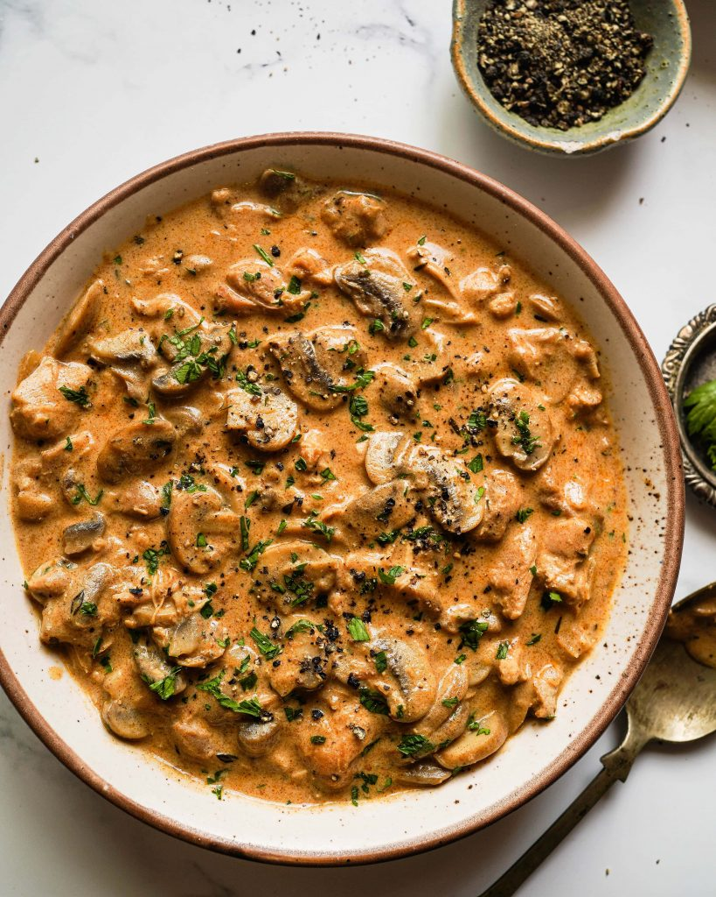

Strogonoff

Ready and delicious plate of Chicken Strogonoff
If you don't know how to make Strogonoff, don't worry!
After following this recipe you'll never forget and always surprise your guests with this deilicous brazillian plate!
Ingredients:
- 3 diced chicken breasts
- salt to taste
- 1 diced onion
- 1tsp butter
- 1/3 cup mustard
- 1 cup table cream
- 1 full diced garlic head
- black pepper to taste
- 2tsp of mayo
- 1/2 cup ketchup
- 1 cup mushrooms
- potato sticks
Steps:
- In a pot, add and stir the chicken, garlic, mayo, salt and pepper.
- In a pan, melt the butter and add onion. Stir until caramalize your onions.
- When golden, add chicken.
- Add mushrooms, ketchup and mustard.
- Incorporate the table cream and turn stove off before boil.
- Serve with white rice and potato sticks and enjoy!